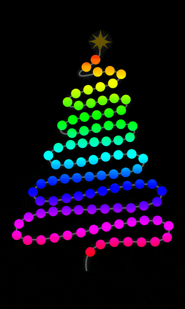
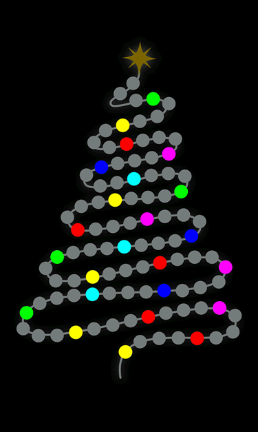
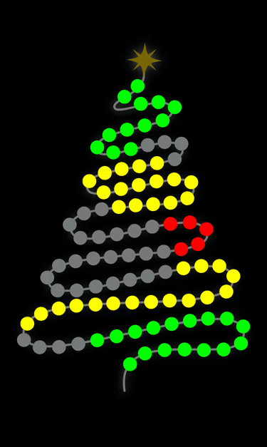
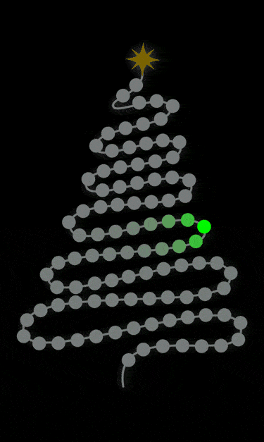
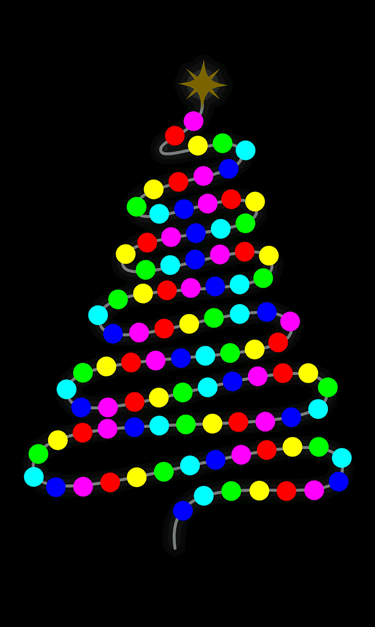
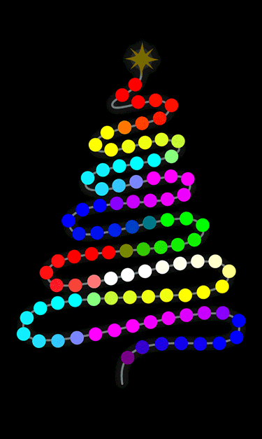
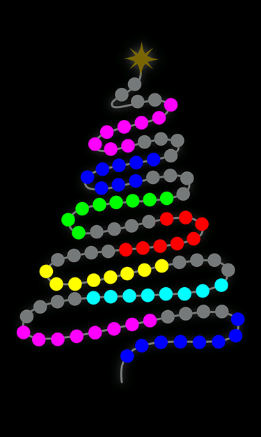
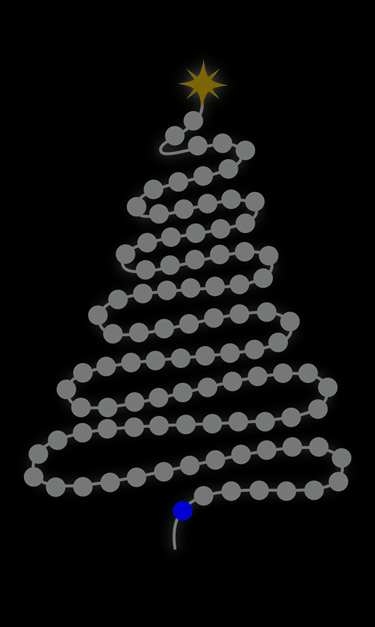

Efeitos das fitas da árvore (Hello Fairy, produto 4004)
Animações do próprio app. Os efeitos são de 1 a 20; as "outras vistas" mostram alguns dos mesmos efeitos desenhados em outros tipos de luz.
Modo música (microfone da própria fita)
Os 4 estilos da tela de música do app, na mesma ordem dos botões. O app só mostra ícones, sem animação. Sensibilidade 85 ficou boa; acrescente uma cor no fim (ex.: musica 2 85 azul) para cor fixa em vez de automática.
Estilo 1: Energia (Energy) uv run natal.py musica 1 85Estilo 2: Ritmo (Rhythm) uv run natal.py musica 2 85Estilo 3: Rolagem (Rolling) uv run natal.py musica 3 85Estilo 4: Espectro (Spectrum) uv run natal.py musica 4 85
Efeitos

Efeito 1 uv run natal.py efeito 1

Efeito 2 uv run natal.py efeito 2

Efeito 3 uv run natal.py efeito 3

Efeito 4 uv run natal.py efeito 4

Efeito 5 uv run natal.py efeito 5

Efeito 6 uv run natal.py efeito 6

Efeito 7 uv run natal.py efeito 7Efeito 8 uv run natal.py efeito 8

Efeito 9 uv run natal.py efeito 9Efeito 10 uv run natal.py efeito 10